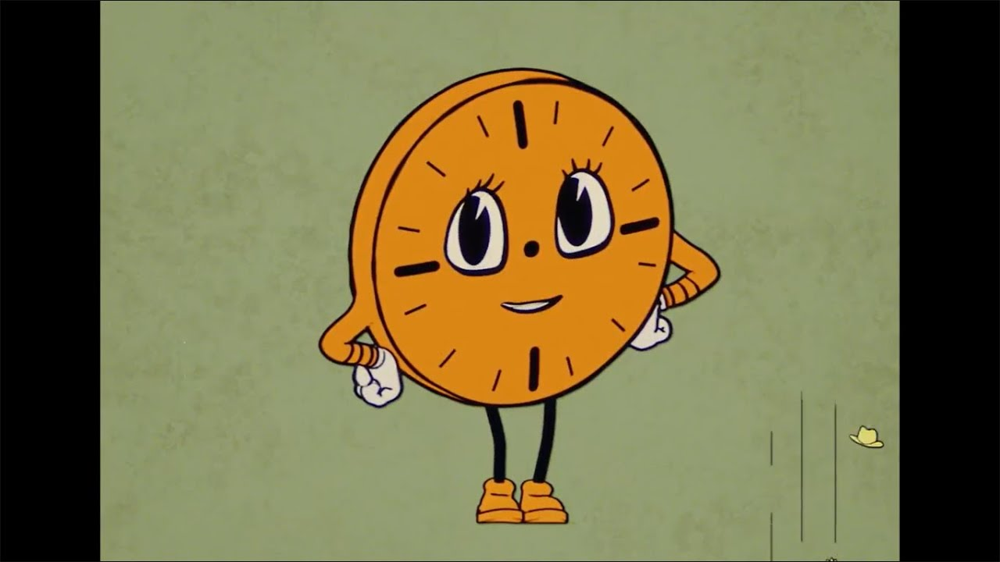
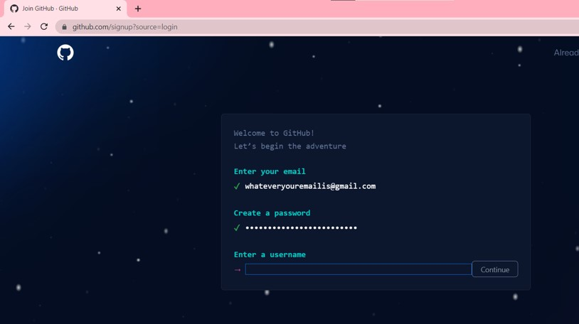
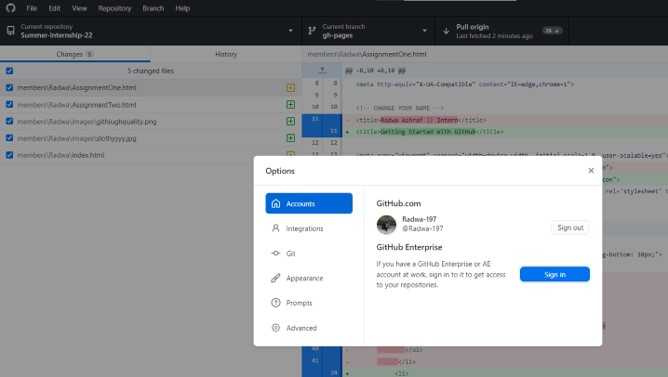
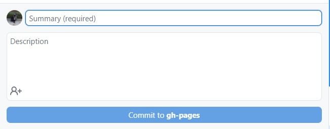
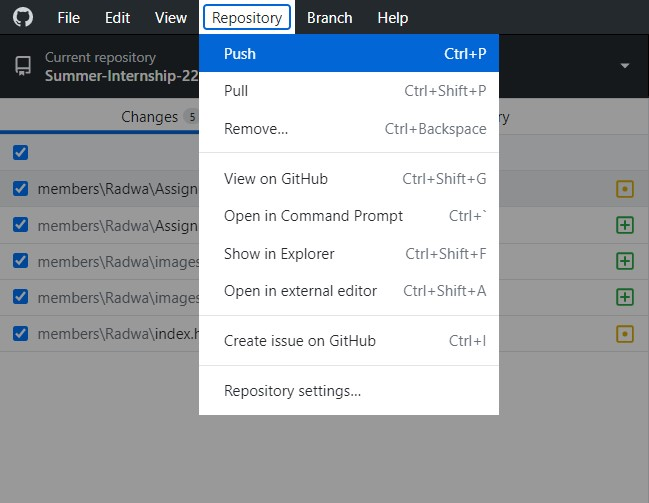
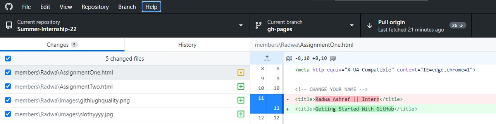
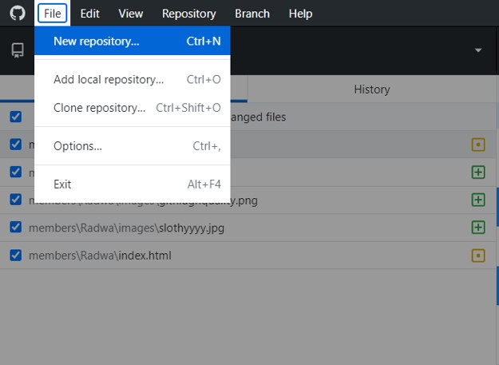
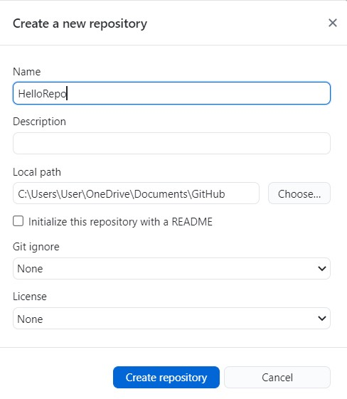

Why the Agony?
Any edits you make with GitHub are saved, what is commonly known as the Version Control System (VCS). This VCS allows you to move in the timeline and get back to unedited versions of your files. You can even make branches and forks to play "edit" them away then come back to the main timeline and carry on with your life. Take care of the Time Variance Authoriyt tho, they might erase you from all universes "laughs mischeavously in Loki's sound".
Getting Started With Git
GitHub the developers’ media, the common place to share work and work collaboratively. Github is owned by Microsoft, and provides access to public (free) and private (paid) repositories. It allows free repository to host files up to 100mb and total size for 2GB. [1]
Creating an Account
The process is pretty straightforward. Easy as creating a FB acount:)
Open github.com and enter your credentials as illustrated below...
Yayyyyyyy! Now that you are done creating your account, you can either work with Git Bash –a command line interface- or for an easier user experience you can start working with the Git GUI.
Installing the GUI
Install the exe file from https://gitforwindows.org/
It immediately starts loading. Your PC is now hosting a .exe that you can install like any other regular app. At launch, you need to sign in to sync the app with the website. Go to File/Options/Sign In
Now everything is ready to share your knowledge to the planet! Before getting into how to share, some basic terms are going to pop up a lot…
Terms and Definitions
Repo: a Git repository tracks and saves the history of all changes made to the files in a Git project. It saves this data in a .git directory , also known as the Repository folder. Git uses a version control system to track all changes made to the project and save them in the repository [2]. It is the first thing to create when starting to work with Git.
Commit: a command to store the current contents of the index in a new commit along with a log message from the user describing the changes. It marks the timeline with the changes you created: what they are and how they were made.
Clone: The Git clone command is used to make a copy, or clone, of an existing Git repository into a local directory. Cloning in Git will create a new local directory for the cloned repository, copy all contents of the specified remote repository, and checkout an initial branch in the new local repo. By default, the Git clone command will create a reference to the remote repository named `origin` and create the remote tracking branches. If you are working with a team and want to make changes to the repo on your device locally, you can make a clone and edit it then PUSH these changes to GitHub.
Push: Git push is used to upload a local repository’s content to a remote repository. Additionally, Git push can also be used to delete a remote repository.
But before you can push anything to the web, you need to PULL all other changes that your teammates made in the same repo.
Pull: Git Pull will take changes from a remote repository and incorporate them into your currently checked out local branch.
Create Your First Repo


Celebrate and Buckle up!
Celebrate and Buckle up!
Welcome to Git community! Now like any true system of codes, happiness does not usually last long. Be prepared for errors and bugs and most importantly, live with them in peace. Do not let some electric pulses make your life miserable. And remember, google is your best friend:)
For more insight, refer to:
[1] https://www.geeksforgeeks.org/introduction-to-github/
[2] https://phoenixnap.com/kb/what-is-a-git-repository
[3] https://www.gitkraken.com/learn/git/definitions
[4] https://www.geeksforgeeks.org/working-on-git-for-gui/